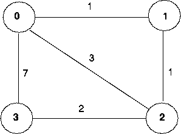

Programming Assignment 2: Distributed Asynchronous Distance Vector Routing
Overview
In this programming assignment, you will be writing a ``distributed'' set of procedures that implement a distributed asynchronous distance vector routing for the network shown below.

The Basic Assignment
The routines you will write For the basic part of the assignment, you are to write the following routines which will ``execute'' asynchronously within the emulated environment that I have written for this assignment.
For node 0, you will write the routines:
rtupdate0() is the ``heart'' of the distance vector algorithm. The values it receives in a routing packet from some other node i contain i's current shortest path costs to all other network nodes. rtupdate0() uses these received values to update its own distance table (as specified by the distance vector algorithm). If its own minimum cost to another node changes as a result of the update, node 0 informs its directly connected neighbors of this change in minimum cost by sending them a routing packet. Recall that in the distance vector algorithm, only directly connected nodes will exchange routing packets. Thus nodes 1 and 2 will communicate with each other, but nodes 1 and 3 will node communicate with each other.
As we saw in class, the distance table inside each node is the principal data structure used by the distance vector algorithm. You will find it convenient to declare the distance table as a 4-by-4 array of int's, where entry [i,j] in the distance table in node 0 is node 0's currently computed cost to node i via direct neighbor j. If 0 is not directly connected to j, you can ignore this entry. We will use the convention that the integer value 999 is ``infinity.''
The figure below provides a conceptual view of the relationship of the procedures inside node 0.
Software Interfaces
The procedures described above are the ones that you will write. I have written the following routines which can be called by your routines:
extern struct rtpkt {
int sourceid; /* id of node sending this pkt, 0, 1, 2, or 3 */
int destid; /* id of router to which pkt being sent
(must be an immediate neighbor) */
int mincost[4]; /* min cost to node 0 ... 3 */
};
Note that tolayer2() is passed a structure, not a pointer to
a structure. Your procedures rtinit0(), rtinit1(), rtinit2(), rtinit3() and rtupdate0(), rtupdate1(), rtupdate2(), rtupdate3() send routing packets (whose format is described above) into the medium. The medium will deliver packets in-order, and without loss to the specified destination. Only directly-connected nodes can communicate. The delay between is sender and receiver is variable (and unknown).
When you compile your procedures and my procedures together and run the resulting program, you will be asked to specify only one value regarding the simulated network environment:
A tracing value of 2 may be helpful to you in debugging your code. You should keep in mind that real implementors do not have underlying networks that provide such nice information about what is going to happen to their packets!
You are to write the procedures rtinit0(), rtinit1(), rtinit2(), rtinit3() and rtupdate0(), rtupdate1(), rtupdate2(), rtupdate3() which together will implement a distributed, asynchronous computation of the distance tables for the topology and costs shown in Figure 1.
You should put your procedures for nodes 0 through 3 in files called
node0.c, .... node3.c. You are NOT allowed to declare any global
variables that are visible outside of a given C file (e.g., any global
variables you define in node0.c. may only be accessed inside node0.c).
This
is to force you to abide by the coding conventions that you would have
to adopt is you were really running the procedures in four distinct
nodes. To compile your routines: cc prog3.c node0.c node1.c node2.c
node3.c. Here are the links to the prototype version of the
node files, and my emulator file, prog3.c:
http://gaia.cs.umass.edu/cs453/hwpa/prog3.c
http://gaia.cs.umass.edu/cs453/hwpa/node0.c
http://gaia.cs.umass.edu/cs453/hwpa/node1.c
http://gaia.cs.umass.edu/cs453/hwpa/node2.c
http://gaia.cs.umass.edu/cs453/hwpa/node3.c
This assignment can be completed on any machine supporting C. It makes no use of UNIX features.
As always, you should hand in a code listing, a design document (as described in the handout accompanying the first programming assignment), and sample output.
For your sample output, your procedures should print out a message whenever yourrtinit0(), rtinit1(), rtinit2(), rtinit3() or rtupdate0(), rtupdate1(), rtupdate2(), rtupdate3() procedures are called, giving the time (available via my global variable clocktime). For rtupdate0(), rtupdate1(), rtupdate2(), rtupdate3() you should print the identity of the sender of the routing packet that is being passed to your routine, whether or not the distance table is updated, the contents of the distance table (you can use my pretty-print routines), and a description of any messages sent to neighboring nodes as a result of any distance table updates.
The sample output should be an output listing with a TRACE value of 2. Highlight the final distance table produced in each node. Your program will run until there are no more routing packets in-transit in the network, at which point my emulator will terminate.
JAVA version of Programming Assignment 3
The documentation above describes the project in detail. Here we provide a link to the code needed to do the assignment in JAVA. Make sure you understand the material above.
Here are the links to the JAVA code you'll need:
Entity.java, Entity0.java, Entity1.java, Entity2.java, Entity3.java, NetworkSimulator.java, Event.java, Packet.java, EventList.java, EventListImpl.java, Project.javaYou'll the write the constructors of Entity0.java, Entity1.java, Entity2.java, and Entity3.java which are analgous to rtinit0(), rtinit1(), rtinit2() and rtinit3() in the C version. You will also need to write the update() methods for Entity0.java, Entity1.java, Entity2.java, and Entity3.java which are analgous to rtupdate0(), rtupdate1(), riupdate2() and rtupdate3() in the C version.
Note that the Java code will allow yu to hang yourself by sending
incorrect packets via the toLayer2() method of NetworkSimulator.
So please be extra careful there.